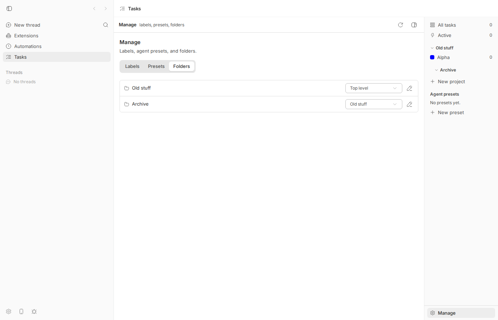
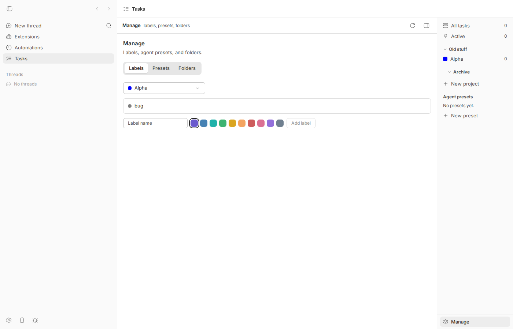
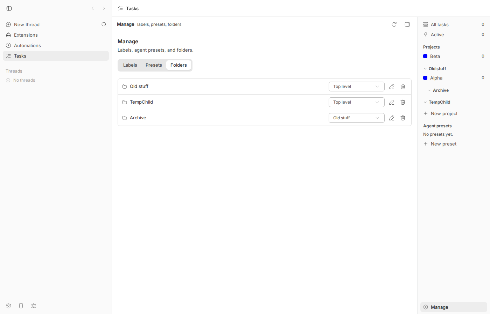
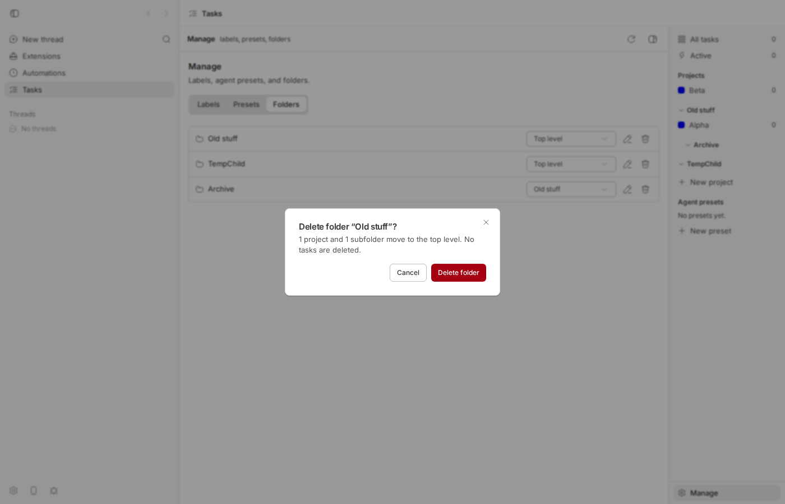
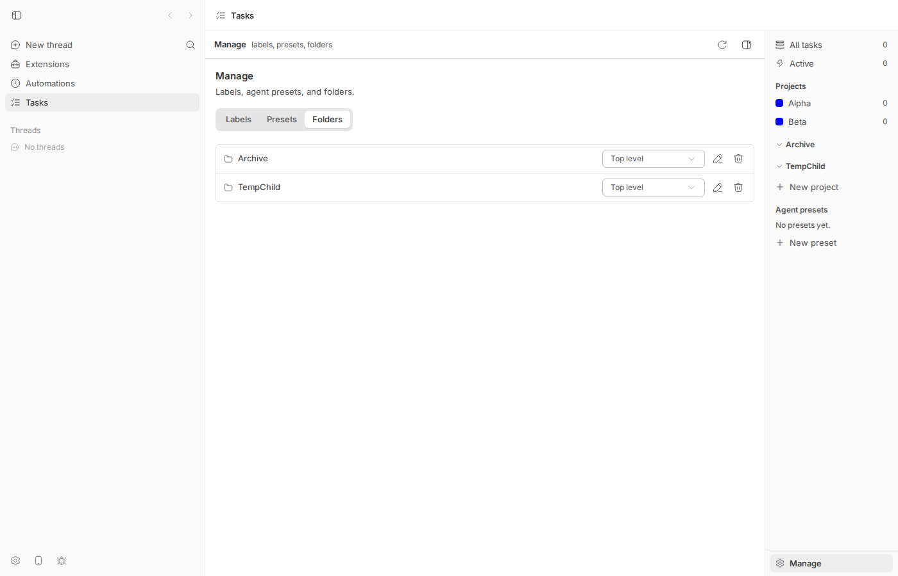

#1701 · Tasks: folders cannot be deleted from the UI
TL;DR
The Tasks plugin lets you group tracker projects into folders. Once a folder exists, the only place in the app that shows folders as editable rows is Tasks → Manage → Folders, and each row there has exactly two controls: a "parent" dropdown and a rename pencil. There is no delete button, no context menu, and nothing in the sidebar either. So a folder can be created from the app but never removed from it.
The backend is complete: the plugin's RPC contract, API handler and SQLite store all implement deleteFolder, and calling it over the raw plugin RPC HTTP route works and is non-destructive (both folder foreign keys are ON DELETE SET NULL, so projects and subfolders just become top-level; I verified this live). The gap is purely that no frontend code path calls deleteFolder. One claim in the issue is wrong: the bb tasks CLI does not expose folder deletion either (bb tasks folder only has create|list|update; folder delete errors with unknown folder subcommand). So on main the feature is reachable only via a hand-written curl to /api/v1/plugins/tasks/rpc/deleteFolder.
PR #1703 adds the trash button and a confirm dialog to the Manage rows, mirrors the Labels pattern, and works (verified in the browser and with its tests). It does not add the CLI surface, which AGENTS.md requires for every end-user feature and which the PR description incorrectly says already exists.
Claims vs findings
| Claim | Status | Evidence |
|---|---|---|
| No way to delete a folder anywhere in the UI | Verified | Manage → Folders rows expose only Parent of … and Rename folder … (DOM dump below, screenshot 1). grep deleteFolder under plugins/tasks/views|shell|components = 0 hits. Sidebar folder headers are collapse toggles only (plugins/tasks/shell/sidebar.tsx#L283-L312). Repro test fails on main. |
Manage → Folders rows offer Rename and a parent Select only (FolderRow) | Verified | plugins/tasks/views/manage/manage-panel.tsx#L438-L531 |
deleteFolder exists in RPC handler, contract and store | Verified | plugins/tasks/api/index.ts#L681-L685, plugins/tasks/shared/contract.ts#L433-L436, plugins/tasks/db/store.ts#L593-L598. Live: POST /api/v1/plugins/tasks/rpc/deleteFolder → {"ok":true,"result":{"deleted":true}}. |
"CLI: bb tasks exposes it" / "only via the CLI" | Refuted | bb tasks folder --help lists create|list|update only; bb tasks folder delete "Old stuff" → unknown folder subcommand: delete (exit 1). plugins/tasks/cli/index.ts#L86-L89, plugins/tasks/cli/index.ts#L810. README also documents only create|list|update. |
Deleting is not destructive: FKs are ON DELETE SET NULL, projects/subfolders move to top level, tasks untouched | Verified | plugins/tasks/db/schema.ts#L7-L20; PRAGMA foreign_keys = ON at plugins/tasks/db/schema.ts#L241. Live: deleting folder Temp left TempChild at top level and project BET with Folder - (transcript below). |
| Labels and Presets rows already have delete controls | Verified | Labels: Delete label bug button present on the Labels tab (DOM dump; screenshot 2), code at plugins/tasks/views/manage/manage-panel.tsx#L211-L220. Presets: trash button at plugins/tasks/views/manage/manage-panel.tsx#L377-L393. |
| Environment: bb 0.38.0, macOS | Unverified | Reproduced instead on Linux at 16ceb3a54; the code has been unchanged since the plugin was merged in (e6be57e76, #1079). |
Environment
- bb
16ceb3a54(main, 2026-08-18) in worktree/home/USER/projects/bb/.claude/worktrees/wf_242c3e11-a10-37.origin/mainata108fa7efhas no commits touchingplugins/taskssince the base commit, so this is not already fixed. - Linux 7.0.0-29-generic (HOST), node v24.18.0, pnpm workspace, vitest 4.1.1. No agent provider was needed (no turns were run).
- Dev instance: App
http://localhost:18366, Serverhttp://localhost:26366, Host daemon:34366, data dir/home/USER/.bb-dev/projects-bb-.claude-worktrees-wf_242c3e11-a10-37-2973edc6629e. The tasks plugin is an official (not auto-installed) bundled plugin, so it had to be installed first withbb plugin install builtin:tasks --yes. - Browser:
dev-browser --headless(Chromium via Playwright), viewport 1400×900.
Minimal reproduction
A. Live, in the app (30 seconds)
- Build and start a dev instance:
pnpm install --frozen-lockfile --prefer-offline && pnpm exec turbo run build && scripts/bb-dev-app current. Note the App and Server URLs it prints, theneval "$(scripts/bb-dev-app env)". - Install the tasks plugin and create a folder with a subfolder and a project (below,
bb=node packages/scripts/dist/commands/run-cli.js):bb plugin install builtin:tasks --yes bb tasks folder create --name "Old stuff" bb tasks folder create --name "Archive" --parent "Old stuff" bb tasks project create --name Alpha --prefix ALP --folder "Old stuff"
- Open
<App URL>/plugins/tasks/tasks/managein a browser and click the Folders tab (or: sidebar → Tasks → "Manage" at the bottom of the right rail → Folders). - Expected: each folder row has a delete control (like label rows do). Actual: rows have only a parent dropdown and a rename pencil. Every button/combobox name on the page, dumped from the DOM by
repro/shot2-manage.js:$ dev-browser --headless --browser bb1701 run repro/shot2-manage.js http://localhost:18366/plugins/tasks/tasks/manage ["Go back","Go forward",...,"Labels","Presets","Folders","Parent of Old stuff","Rename folder Old stuff","Parent of Archive","Rename folder Archive","Toggle sidebar (Ctrl + \\)"] $ dev-browser --headless --browser bb1701 run repro/shot3-labels.js delete-ish buttons on Labels tab: ["Delete label bug"]
- Try the CLI instead: Expected (per the issue) a delete command. Actual:
$ bb tasks folder --help Usage: bb tasks folder create --name <name> [--parent <id-or-name>] [--json] bb tasks folder list [--json] bb tasks folder update <id-or-name> [--name <name>] [--parent <id-or-name> | --no-parent] [--json] $ bb tasks folder delete "Old stuff" unknown folder subcommand: delete (exit 1)
- The only thing that works on main is the raw plugin RPC route (proves the backend is complete and non-destructive):
$ curl -s -X POST $BB_SERVER_URL/api/v1/plugins/tasks/rpc/deleteFolder -H 'content-type: application/json' -d '{"folderId":"<id of Temp>"}' {"ok":true,"result":{"deleted":true}} $ bb tasks folder list # TempChild is now top level $ bb tasks project show BET # Folder -Full transcript with ids:1701/cli-transcript.log.


aria-label="Delete label bug" in the DOM dump); the icons are opacity-0 group-hover:opacity-100, which is why they are not visible in this non-hovered capture.B. Unit-level repro (fails on main, passes on PR #1703)
File: 1701/repro/issue-1701.repro.test.tsx. Copy it to plugins/tasks/views/manage/ and run cd plugins/tasks && pnpm exec vitest run views/manage/issue-1701.repro.test.tsx. It renders the plugin's nav panel at manage, opens the Folders tab, proves the row rendered (finds Rename folder Old stuff) and then looks for any /delete folder/i button. On main that assertion fails:
RUN v4.1.1 /home/USER/projects/bb/.claude/worktrees/wf_242c3e11-a10-37/plugins/tasks
❯ bb-plugin-tasks views/manage/issue-1701.repro.test.tsx (1 test | 1 failed) 1715ms
× offers a delete control on each folder row and calls deleteFolder 1714ms
⎯⎯⎯⎯⎯⎯⎯ Failed Tests 1 ⎯⎯⎯⎯⎯⎯⎯
TestingLibraryElementError: Unable to find role="button" and name `/delete folder/i`
...
Test Files 1 failed (1)
Tests 1 failed (1)
Full output: 1701/repro-main.log. The test source:
// @vitest-environment jsdom
// Repro for get-bb/bb#1701: Tasks -> Manage -> Folders has no delete control,
// even though the `deleteFolder` RPC exists. On main this test FAILS at the
// `findByRole("button", { name: /delete folder/i })` assertion.
import { cleanup, fireEvent } from "@testing-library/react";
import { afterEach, describe, expect, it } from "vitest";
import { loadPluginApp, renderSlot } from "@get-bb/plugin-sdk/testing/app";
if (!globalThis.ResizeObserver) {
globalThis.ResizeObserver = class {
observe() {}
unobserve() {}
disconnect() {}
};
}
if (!Element.prototype.scrollIntoView) {
Element.prototype.scrollIntoView = () => {};
}
if (!window.matchMedia) {
window.matchMedia = (query: string) => ({
matches: false,
media: query,
onchange: null,
addListener: () => {},
removeListener: () => {},
addEventListener: () => {},
removeEventListener: () => {},
dispatchEvent: () => false,
});
}
const app = await loadPluginApp(() => import("../../app"));
afterEach(cleanup);
const folder = {
id: "01HZZZZZZZZZZZZZZZZZZZZZF1",
name: "Old stuff",
parentFolderId: null,
createdAt: "2026-07-15T00:00:00.000Z",
};
describe("issue #1701 – folders cannot be deleted from Manage", () => {
it("offers a delete control on each folder row and calls deleteFolder", async () => {
const deleteCalls: unknown[] = [];
const slot = renderSlot(
app.navPanels[0]!,
{ subPath: "manage" },
{
rpc: {
listProjects: () => ({ projects: [] }),
listFolders: () => ({ folders: [folder] }),
listPresets: () => ({ presets: [] }),
sidebarSummary: () => ({ projects: [] }),
listTasks: () => ({ tasks: [] }),
listLabels: () => ({ labels: [] }),
deleteFolder: (input: unknown) => {
deleteCalls.push(input);
return { deleted: true };
},
},
},
);
fireEvent.mouseDown(await slot.findByRole("tab", { name: "Folders" }));
// The row exists (rename control proves the Folders tab rendered) ...
await slot.findByRole("button", { name: "Rename folder Old stuff" });
// ... but there is no delete control at all. This is the failing line on main.
const deleteButton = await slot.findByRole(
"button",
{ name: /delete folder/i },
{ timeout: 1500 },
);
fireEvent.click(deleteButton);
// Confirm and expect the RPC to be called.
fireEvent.click(await slot.findByRole("button", { name: "Delete folder" }));
await slot.findByRole("tab", { name: "Folders" });
expect(deleteCalls).toEqual([{ folderId: folder.id }]);
});
});
Root cause
This is a missing surface, not a broken one. The folder feature was merged with a full backend and a half-finished admin UI, and nothing wires the two together for delete:
- Backend, complete. Contract
plugins/tasks/shared/contract.ts#L433-L436(deleteFolder: { input: { folderId }, output: { deleted: boolean } }), API handlerplugins/tasks/api/index.ts#L681-L685(deletes, thenpublishProjectsChanged, which is the channeluseFolders/useProjectsinvalidate on:plugins/tasks/shell/data.ts#L146-L158), storeplugins/tasks/db/store.ts#L593-L598:function deleteFolder(id: string): boolean { return ( db.prepare<[string]>("DELETE FROM folders WHERE id = ?").run(id).changes > 0 ); }Non-destructiveness comes from the schema,plugins/tasks/db/schema.ts#L7-L20, withforeign_keys = ONatplugins/tasks/db/schema.ts#L241:CREATE TABLE IF NOT EXISTS folders ( id TEXT PRIMARY KEY, name TEXT NOT NULL, parent_folder_id TEXT REFERENCES folders(id) ON DELETE SET NULL, created_at TEXT NOT NULL ); CREATE TABLE IF NOT EXISTS projects ( ... folder_id TEXT REFERENCES folders(id) ON DELETE SET NULL,
- Frontend, missing.
FolderRow(plugins/tasks/views/manage/manage-panel.tsx#L438-L531) renders a parent<Select>and a rename button and nothing else;FoldersSection(plugins/tasks/views/manage/manage-panel.tsx#L533-L590) passes onlyonRename/onMove:<Button size="icon" variant="ghost" className="size-6 text-muted-foreground" aria-label={`Rename folder ${folder.name}`} onClick={() => { setDraftName(folder.name); setRenaming(true); }} > <Icon name="Edit" className="size-3.5" /> </Button> </> )} </div> ); } // <- end of FolderRow: rename + parent <Select> are the only controls<FolderRow key={folder.id} folder={folder} rootFolders={rootFolders} onRename={(name) => run(() => rpc.call("renameFolder", { folderId: folder.id, name }))} onMove={(parentFolderId) => run(() => rpc.call("moveFolder", { folderId: folder.id, parentFolderId }))} /> // no onDelete; "deleteFolder" is never referenced anywhere under plugins/tasks/views, shell or componentsThe sidebar renders folders asSectionHeadercollapse toggles with no menu (plugins/tasks/shell/sidebar.tsx#L283-L312).grepconfirms the RPC name never appears in the app code:$ grep -rn "deleteFolder" plugins/tasks --include=*.ts --include=*.tsx | grep -v node_modules plugins/tasks/api/index.ts:681: deleteFolder(input) { plugins/tasks/api/index.ts:682: const deleted = store.tasks.deleteFolder(input.folderId); plugins/tasks/shared/contract.ts:433: deleteFolder: { plugins/tasks/db/store.ts:593: function deleteFolder(id: string): boolean { plugins/tasks/db/store.ts:1814: deleteFolder, # -> zero hits in views/, shell/, components/ (the app) and zero hits in cli/ - CLI, also missing (the issue got this wrong).
plugins/tasks/cli/index.ts#L86-L89and the fall-through atplugins/tasks/cli/index.ts#L810:const FOLDER_HELP = `Usage: bb tasks folder create --name <name> [--parent <id-or-name>] [--json] bb tasks folder list [--json] bb tasks folder update <id-or-name> [--name <name>] [--parent <id-or-name> | --no-parent] [--json]`; ... throw new CliError(`unknown folder subcommand: ${action}`);The README (plugins/tasks/README.md#L72) documentsbb tasks folder create|list|update, consistent with the code.
Why the symptom follows: the app only ever calls renameFolder/moveFolder for folders, so no user action can reach deleteFolder; the CLI has no verb for it either; the generic POST /api/v1/plugins/:id/rpc/:method route is the sole caller left. Deeper issue: AGENTS.md's rule that every end-user feature ships with app, SDK and CLI surfaces was not applied to folder deletion when folders landed in #1079; the same code gave labels and presets all three (bb tasks label delete, bb tasks preset delete, plus UI trash buttons).
Proposed fix (first principles)
- App: add a trash button to
FolderRowand aConfirmDialoginFoldersSectionthat callsrpc.call("deleteFolder", { folderId })through the existingrun()error wrapper (so failures land in the section'srole="alert"). The confirm copy should say what actually happens ("N projects and M subfolders move to the top level; no tasks are deleted") because deletion re-parents rather than destroys. This is exactly what PR #1703 does. - CLI: add
bb tasks folder delete <id-or-name> [--json]inrunFolder(resolve via the existingresolveFolder, calldomain.deleteFolder,publishProjectsChanged), updateFOLDER_HELP,ROOT_HELPandplugins/tasks/README.mdrow 72. Since folder deletion is non-destructive there is no need for a--yesguard (labels/presets don't have one either), but a short line in the output ("N projects moved to top level") would help agents. - Optional: a right-click/kebab menu on sidebar folder headers is nice-to-have; not needed to close the issue.
What could go wrong: none of this touches the server/daemon wire, so no HOST_DAEMON_PROTOCOL_VERSION bump. The only behavioural subtlety is that useFolders/useProjects refresh via projects:changed, which deleteFolder already publishes, so the list and the sidebar update without extra invalidation.
PR review
PR #1703 · "Tasks: let folders be deleted from Manage" (branch fix/tasks-delete-folder, +128/−0)
What it changes. plugins/tasks/views/manage/manage-panel.tsx: adds onDelete to FolderRow with a Trash2 icon button (aria-label="Delete folder <name>"); FoldersSection gains useProjects(), a confirmDelete state, a describeDeleteImpact() helper and a ConfirmDialog whose onConfirm runs rpc.call("deleteFolder", …) through the existing run(). manage.test.tsx: two new tests (impact copy + RPC call; error surfaces in role="alert"). Diff saved at 1701/pr1703.diff.
Does it address the root cause? Yes for the app half: it wires the existing RPC to the one folder-management surface, using the same ConfirmDialog + run() pattern the Labels section already uses, so behaviour (error handling, refresh via projects:changed) is consistent. It does not add the CLI half.
Tests I ran (on the PR branch, merge-base fb264aff4, which is a few commits behind base; nothing under plugins/tasks differs):
RUN v4.1.1 /home/USER/projects/bb/.claude/worktrees/wf_242c3e11-a10-37/plugins/tasks
Test Files 2 passed (2) # issue-1701.repro.test.tsx + manage.test.tsx
Tests 24 passed (24)
$ pnpm exec turbo run typecheck test --filter=bb-plugin-tasks
bb-plugin-tasks:test: Test Files 36 passed (36)
bb-plugin-tasks:test: Tests 333 passed (333)
Tasks: 3 successful, 3 total
Live check: restarted the dev instance on the PR branch, opened Manage → Folders, clicked the new trash button on "Old stuff" (1 project + 1 subfolder), confirmed. Script repro/shot4-pr-delete.js; output:
$ dev-browser --headless --browser bb1701 run repro/shot4-pr-delete.js folder buttons: ["Folders","Rename folder Old stuff","Delete folder Old stuff","Rename folder TempChild","Delete folder TempChild","Rename folder Archive","Delete folder Archive"] dialog text: Delete folder “Old stuff”?1 project and 1 subfolder move to the top level. No tasks are deleted.CancelDelete folderClose alert: null



bb tasks folder list / project show ALP agree (transcript).Findings (author treated as hostile; nothing here is a correctness bug):
| Severity | Where | Finding |
|---|---|---|
| Medium | PR description "No contract, CLI, or docs change — the surfaces already existed"; plugins/tasks/cli/index.ts:86-89, :810; plugins/tasks/README.md:72 | False premise. The CLI has no folder delete; only the raw RPC route exists. AGENTS.md ("Every end-user feature must also be usable by agents through both the SDK and the bb CLI; ship and document those surfaces in the same change as the UI") requires bb tasks folder delete plus FOLDER_HELP/README updates in this PR. Small, mechanical addition next to label delete. |
| Low | manage-panel.tsx (PR) FoldersSection → useProjects() | Adds a second live listProjects subscription on the Manage view solely to count projects for the confirm copy (the Labels section already has one; the sidebar a third). Acceptable for a settings surface, but a listProjects RPC per projects:changed event per subscriber is the cost. Not blocking. |
| Low | describeDeleteImpact | Correct for the one-level nesting the UI enforces. If deeper nesting is ever created via CLI (--parent accepts any folder), only direct children are counted; grandchildren stay attached to their (now top-level) parent, so the copy is still truthful. Fine. |
| Low | manage.test.tsx (PR) | Tests are of the right shape (behavioural, use the fake RPC, cover success + failure) and pass. They do not assert that the dialog closes / the row disappears after a successful delete, but the refresh path is shared with rename/move and covered elsewhere. |
| Info | Layer / wire | Frontend-only; no server, daemon, or contract change; no HOST_DAEMON_PROTOCOL_VERSION concern. No casts or any. Uses the plugin's existing modal ConfirmDialog (a Dialog, not the shared responsive drawer AGENTS.md prescribes for compact pickers); that is a pre-existing choice shared with Labels/Presets and out of scope here. |
Verdict: REQUEST CHANGES (minor). The UI change is correct, tested and matches the codebase's own pattern; I could not break it. Ask for the bb tasks folder delete subcommand + help/README line in the same PR (per AGENTS.md), and fix the description's claim that the CLI surface already exists. With that added it is a MERGE.
Related issues
- #1079 "Merge official-plugins into plugins" — the commit (
e6be57e76) that brought inmanage-panel.tsx,deleteFolderand the folder CLI in their current shape. - #1676 Tasks plugin reload/empty-state flashes — unrelated, same plugin.
- No other open issue mentions tasks folders (
gh issue list --search "tasks folder").
Appendix
Commands run
git checkout 16ceb3a54 # worktree HEAD was a108fa7ef (5 commits ahead, none in plugins/tasks)
pnpm install --frozen-lockfile --prefer-offline
pnpm exec turbo run build
git fetch origin main; git log 16ceb3a54..origin/main --oneline -- plugins/tasks # (empty)
grep -rn "deleteFolder" plugins/tasks --include=*.ts --include=*.tsx | grep -v node_modules
scripts/bb-dev-app current # App :18366 / Server :26366 / daemon :34366
export BB_SERVER_URL=http://localhost:26366
node packages/scripts/dist/commands/run-cli.js plugin install builtin:tasks --yes
node packages/scripts/dist/commands/run-cli.js tasks folder --help
node packages/scripts/dist/commands/run-cli.js tasks folder create --name "Old stuff" --json
node packages/scripts/dist/commands/run-cli.js tasks folder create --name Archive --parent "Old stuff" --json
node packages/scripts/dist/commands/run-cli.js tasks project create --name Alpha --prefix ALP --folder "Old stuff" --json
node packages/scripts/dist/commands/run-cli.js tasks folder delete "Old stuff" # unknown folder subcommand
node packages/scripts/dist/commands/run-cli.js tasks label create --project ALP --name bug --json
dev-browser --headless --browser bb1701 --idle-timeout 10m run repro/shot1-home.js
dev-browser --headless --browser bb1701 --idle-timeout 10m run repro/shot2-manage.js
dev-browser --headless --browser bb1701 --idle-timeout 10m run repro/shot3-labels.js
node packages/scripts/dist/commands/run-cli.js tasks folder create --name Temp --json
node packages/scripts/dist/commands/run-cli.js tasks folder create --name TempChild --parent Temp --json
node packages/scripts/dist/commands/run-cli.js tasks project create --name Beta --prefix BET --folder Temp --json
curl -s -X POST $BB_SERVER_URL/api/v1/plugins/tasks/rpc/deleteFolder -H 'content-type: application/json' -d '{"folderId":"01M09Y9WEGZRBDRABWTYNEBN0K"}'
node packages/scripts/dist/commands/run-cli.js tasks folder list; ... tasks project show BET
cp repro test into plugins/tasks/views/manage/ ; cd plugins/tasks && pnpm exec vitest run views/manage/issue-1701.repro.test.tsx # FAILS on main
gh pr diff 1703 > pr1703.diff; git stash -u; gh pr checkout 1703; git stash pop
cd plugins/tasks && pnpm exec vitest run views/manage/issue-1701.repro.test.tsx views/manage/manage.test.tsx # 24 passed
pnpm exec turbo run typecheck test --filter=bb-plugin-tasks # 36 files / 333 tests passed, typecheck clean
scripts/bb-dev-app current # restart on PR branch
dev-browser --headless --browser bb1701 --idle-timeout 10m run repro/shot4-pr-delete.js
pnpm dev:stop; git checkout 16ceb3a54
Full CLI / RPC transcript
# Dev instance (worktree wf_242c3e11-a10-37 @ 16ceb3a54): App :18366, Server :26366, Host daemon :34366
# Data dir: /home/USER/.bb-dev/projects-bb-.claude-worktrees-wf_242c3e11-a10-37-2973edc6629e
# bb = BB_SERVER_URL=http://localhost:26366 node packages/scripts/dist/commands/run-cli.js
$ bb plugin install builtin:tasks --yes
Installing builtin:tasks
Installed:
tasks@0.1.1 running
source: builtin:tasks
command: bb tasks — Create and manage task-tracker projects, tasks, labels, and comments
$ bb tasks folder --help
Usage:
bb tasks folder create --name <name> [--parent <id-or-name>] [--json]
bb tasks folder list [--json]
bb tasks folder update <id-or-name> [--name <name>] [--parent <id-or-name> | --no-parent] [--json]
$ bb tasks folder create --name "Old stuff" --json
{"folder":{"id":"01M09Y5Q2EAP5HHV9WCJFS6PNW","name":"Old stuff","parentFolderId":null,"createdAt":"2026-08-18T08:00:29.774Z"}}
$ bb tasks folder create --name "Archive" --parent "Old stuff" --json
{"folder":{"id":"01M09Y5QQGGTS278ZPXT4NC6TH","name":"Archive","parentFolderId":"01M09Y5Q2EAP5HHV9WCJFS6PNW","createdAt":"2026-08-18T08:00:30.448Z"}}
$ bb tasks project create --name "Alpha" --prefix ALP --folder "Old stuff" --json
{"project":{"id":"01M09Y5RE96C2KPC12CMZPAT4K","name":"Alpha","prefix":"ALP","nextTaskNumber":1,"color":"blue","folderId":"01M09Y5Q2EAP5HHV9WCJFS6PNW","linkedBbProjectId":null,"createdAt":"2026-08-18T08:00:31.177Z"}}
$ bb tasks folder list
NAME PARENT ID
Old stuff - 01M09Y5Q2EAP5HHV9WCJFS6PNW
Archive Old stuff 01M09Y5QQGGTS278ZPXT4NC6TH
$ bb tasks folder delete "Old stuff"
unknown folder subcommand: delete
exit 1
# ON DELETE SET NULL check via the raw plugin RPC route (the only working delete surface on main):
$ bb tasks folder create --name Temp --json
{"folder":{"id":"01M09Y9WEGZRBDRABWTYNEBN0K","name":"Temp","parentFolderId":null,...}}
$ bb tasks folder create --name TempChild --parent Temp --json
{"folder":{"id":"01M09Y9X10V2JVBWTWGHN8S57X","name":"TempChild","parentFolderId":"01M09Y9WEGZRBDRABWTYNEBN0K",...}}
$ bb tasks project create --name Beta --prefix BET --folder Temp --json
{"project":{"id":"01M09Y9XKC7EWW39P5JHJK2WHV","name":"Beta","prefix":"BET",...,"folderId":"01M09Y9WEGZRBDRABWTYNEBN0K",...}}
$ curl -s -X POST $BB_SERVER_URL/api/v1/plugins/tasks/rpc/deleteFolder -H 'content-type: application/json' -d '{"folderId":"01M09Y9WEGZRBDRABWTYNEBN0K"}'
{"ok":true,"result":{"deleted":true}}
$ bb tasks folder list
NAME PARENT ID
Old stuff - 01M09Y5Q2EAP5HHV9WCJFS6PNW
TempChild - 01M09Y9X10V2JVBWTWGHN8S57X
Archive Old stuff 01M09Y5QQGGTS278ZPXT4NC6TH
$ bb tasks project show BET
Project BET — Beta
ID 01M09Y9XKC7EWW39P5JHJK2WHV
Color blue
Folder -
BB project -
Next task BET-1
# After PR #1703 (dev instance restarted on branch fix/tasks-delete-folder), deleting "Old stuff" from the UI:
$ bb tasks folder list
NAME PARENT ID
Archive - 01M09Y5QQGGTS278ZPXT4NC6TH
TempChild - 01M09Y9X10V2JVBWTWGHN8S57X
$ bb tasks project show ALP | head -4
Project ALP — Alpha
ID 01M09Y5RE96C2KPC12CMZPAT4K
Color blue
Folder -
Artifacts
repro/issue-1701.repro.test.tsx— failing-on-main vitest reprorepro-main.log— its output on main;pr-tests.log,pr-turbo.log— on PR #1703shot1-home.js,shot2-manage.js,shot3-labels.js,shot4-pr-delete.js— dev-browser scripts (adjust thelocalhost:18366App URL to your instance)pr1703.diff,cli-transcript.log